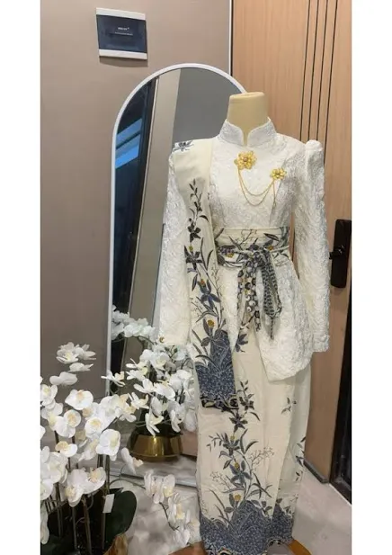

Paluruh tahapan pernikahan adat Sunda anu penuh makna, ti neundeun omong nepi ka huap lingkung. Warisan karuhun anu masih dijaga kénéh.
Prosesi ti pra-nikah nepi ka pasca upacara
Upacara pamungkas ti kulawarga calon pengantin pikeu ngawujudkeun niat nikah. Kulawarga calon pamajikan ngalakonan sungkem ka kulawarga calon mempelai wadon.
Acara lamaran resmi anu ngahaja perhiasan, duit, baju, jeung seserahan. Nyandakeun diayakeun saminggu sateuacan dinten nikah.
Pengantin diguyur ku cai anu dicampur kembang tujuh rupa. Maknana pikeu ngabersihkeun awak jeung haté sateuacan nikah.
Pengantin ngalakonan sungkem ka indung-bapa pikeu ménta restu. Hiji-hijina prosesi anu teu kudu diantepkeun dina agama.
Upacara sakral anu dilakosan ku penganten lalaki di imahna atawa di KUA. Saksi jeung wali kudu aya dina acara ieu.
Penganten lalaki datang ka imah penganten wadon jeung rombongan. Diantos ku pager ayu, panayagan, jeung Ki Lengser.
Indung-bapa ngawer beras, duit, kunir, permén, jeung kembang ka penganten. Maknana: rejeki, kamakmuran, jeung kakawinan anu manis.
Penganten lalaki nincak endog, tuluy penganten wadon ngumbah suku batur. Simbol: rasa hormat jeung kasih ka salaki.
Indung-bapa nyuapi penganten pikeu panungtungan kalayan. Penganten ogé saling nyuapi: simbol saling ngajaga jeung ngarawat.
Penganten saling tarung pikeu bagian ayam bakar anu paling gede. Simbol: rejeki anu dicariosan sacara adil.
Harti tina unggal prosesi pernikahan
Huap lingkung jeung pabetot bakakak ngajarkan kana pentingna saling ngarawat jeung ngabagi dina rumahtangga.
Nincak endog jeung ngumbah suku nunjukkeun rasa hormat penganten wadon ka salaki minangka kepala kulawarga.
Siraman ngalambangkeun kabersihan awak jeung haté sateuacan ngawangun rumahtangga anyar.
Saweran jeung mapag panganten ngahijikeun kulawarga dua pihak jadi hiji kulawarga gede.
Barang-barang anu diperlukeun dina upacara
Simbol pembelahan hirup jeung pupus. Ogé minangka alat pertahanan jeung kakuatan.
Simbol perlindungan jeung kamulyaan. Payung anu dihias warna-warni dipaké dina prosesi mapag panganten.
Digunakeun dina siraman: mawar bodas jeung beureum, cempaka, kenanga, melati, sedap malam, jeung melati gambir.
Ayam bakar anu dijieun pikeu prosesi pabetot. Simbol rejeki jeung kabagjaan rumahtangga.
Pakaian adat Sunda anu mewah jeung bermakna

Pakaian pengantin adat Sunda ngalambangkeun kasucian jeung kamulyaan. Bahan-bahan anu digunakeun:
"Pakaian pengantin henteu ngan hiasan, tapi simbol status sosial jeung kasucian haté."
"Titi Gantung, Tali Rasa - Rumahtangga anu jangkungna gumantung kana rasa anu aya dina rumahtangga éta."
- Pepeling Urang Sunda